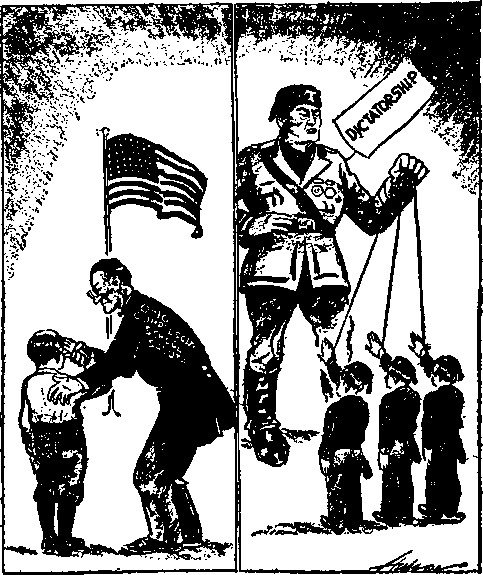

A JOURNAL OF FACT HOPE AND COURAGE
iiiiiiiiiiiiiiiiiiiiiiiiiiiiiiiiiiiiiiiiiiiiiiiniiiiifiiiiiniiiiiiiiiiiiiiiiii
in this issue
AMERICA SCORNS JESUIT INSULTS TO THE STARS AND STRIPES
CHURCH
JEHOVAH’S WITNESSES IN FIJI, NEW ZEALAND AND AMERICA
AGRICULTURE
THERE SHALL BE NO MORE DEATH
llllllllllllllllllllllllllllllilJIIIilllllllllllllllllllllllllllllHIlUIIIIIIII
every other
WEDNESDAY
five cents a copy one dollar a year Canada & Foreign 1.25
Vol. XVII - No. 429
February 26,1936
"I II
CONTENTS
O<G) • in -■■■■-■- I . QXO •»
|
SOCIAL AND EDUCATIONAL |
Jersey’s Official Prayers |
344 | |
|
America Scorns Jesuit Insults |
Compulsory Flag Salutes |
344 | |
|
To Stars and Stripes |
323 |
With Justice and Peace and | |
|
Church Jehovah's witnesses |
337 338 |
Brass Knuckles |
350 |
|
An Old-Timer in New Zealand |
339 |
AGRICULTURE AND HUSBANDRY | |
|
Report on a Case at Verona, N. J. |
339 |
What Can the Farmer Do? |
343 |
|
In New England |
340 |
Dangers to Farm Children |
343 |
|
Witnessing in the Rockies |
340 |
$675,000 to Swift & Company |
343 |
|
The Business of the Journalist |
342 |
Millions of Kinds of Insects |
343 |
|
Time Grovels Before the Hierarchy |
342 |
Shelling Beans with a Wringer |
343 |
|
South Dakota Loses Population |
342 |
Want Ad for a New Deal Farm |
343 |
|
The Firecracker Nuisance |
342 |
Every American a Detective |
343 |
|
Pfwhat Mrs. Hooley Said |
342 |
Successful Wars on Pests |
343 |
|
Bathroom Rebel of 2 New Teeth at 80 |
342 342 |
Farmer Gets 46% of the Price |
343 |
|
More Pennsylvania Paragraphs |
345 |
TRAVEL AND MISCELLANY | |
|
There Shall Be No More Death |
347 |
Unholy Roman Empire vs. Seventh World Power Pizarro Was a Piker |
341 341 |
|
POLITICAL—DOMESTIC AND FOREIGN |
Within One Week |
3-11 | |
|
Coal Operators on Emergent Relief 3-44 |
Electric Soil-Heating in Canada |
341 | |
|
Mooney Is Still in Prison |
344 |
“Kindness to the Dead’’ |
341 |
|
Courtesy Cards to Politicians |
344 |
Composition of Canadian Cabinet |
341 |
|
Negroes on Southern Juries |
344 |
Air Mail Rates in Australia |
341 |
|
The Guardian on the Second Coming |
344 |
How to Pay Your Debts |
351 |
-<sXq)»
I’ublished every other Wednesday by
GOLDEN AGE PUBLISHING COMPANY, INC.
117 Adams Street, Brooklyn, N. Y., U. S. A.
Clayton J. Woodworth President Nathan H. Knorr Vice President
Charles E. Wagner Secretary and Treasurer
FIVE CENTS A COPY
$1 a year, United States; $1.25 to Canada and all other countries.
Notice to Subscribers
Remittances : For your own safety, remit by postal or express money order. When coin or currency is lost in the ordinary mails, there is no redress Remittances from countries other than those named below may be made to the Brooklyn office, but only by international postal money order.
Receipt of a new or renewal subscription will be acknowledged only when requested. Notice of expiration is sent with the journal one month before subscription expires. Please renew promptly to avoid loss of copies.
Send change of address direct to us rather than to the post office Your request should reach us at least two weeks before the date of issue with which it is to take effect. Send your old as well as the new address. Copies will not be forwarded by the post office to your new address unless extra postage is provided by you.
Published also in Bohemian, Danish. Dutch, Finnish, French, German, Greek, Japanese, Norwegian, Polish, Spanish, Swedish.
Offices for Other Countries
British 34 Craven Terrace, London. W. 2, England
Canadian- 40 Irwin Avenue, Toronto 5. Ontario, Canada
Australasian 7 Beresford Road, Strathfield, N. S. W., Australia
South African Boston House, Cape Town, South Africa
Entered as second-class matter at Brooklyn, N. Y., under the Act of March 3, 1S79.
-
5====== 1 ---- _ ■ ■■ =^=s= ... =s==s^aBg
Volume XVII Brooklyn, N.Y., Wednesday, February 26, 1936 Number 429
America Scorns Jesuit Insults to the Stars and Stripes
THE worst insult ever given to the American flag is the present conspiracy originated by the Devil or his prime minister Gog to force the free American people to bow to the emblem of their military power. If this scheme, which the American Legion has been betrayed into backing, were to succeed, the American republic would be at an end, replaced by a Jesuit-Fascist regime in which all that the flag stands for would be dragged in the dust.
A surprisingly large number of editors of the greatest newspapers in the United States see the situation clearly. They well know that in America the people are supposed to rule; the government is supposed to be the servant. The Jesuit idea is the reverse, that the pope and those who bow to his will are the rulers and that the people should be, and, it is their intention, must be made to be, for ever subject to their will.
“Here’s where you come in.”
American press comment on this issue has grown to such an extent that space is no longer available for the copious extracts of which the theme is worthy. Hence it becomes necessary to condense. For convenience the condensations are arranged in alphabetical order of the states.
Birmingham Age-Herald: “From what source springs patriotism, one may ask? Is it patriotism to stand before a flag and raise your hand to your right brow if your heart is not in the action? If love of country is to be inculcated, it would seem that the proper thing to do would be to have that government so wise and kind and good as to deserve respect. Many a parent has learned to his sorrow that you cannot command a child’s love. You can force obedience, but not respect. One somehow expects better things of Massachusetts than this spectacle of bringing a child into court for refusing a salute it did not feel because it recognized only a higher and more powerful government.” (See also The Golden Age No. 421, page 69.)
Birmingham News; “In modern America certain groups of people have taken it upon themselves to dictate what shall be taught and what shall be learned in the public school system. They forget that this nation was founded on a belief in the sacredness of liberty and freedom to all. . . . Their shortsightedness cannot be condemned too strongly. . . . We are in no danger from Communism in America. We have a representative and a beneficent leadership. We have an enlightened people. Communism* does not grow in such an environment. We do face a danger from Fascism, a philosophy which is *Jesuits Caught with the Goods
American radio listeners and newspaper readers, February 12. 1936, were greatly Interested In the news from Germany that 150 priests and others had been arrested, caught with possessing and distributing Communist literature. It Is perfectly apparent that the Communist scare in America Is of Jesuit manufacture. The attempt, in both countries, Is to secure absolute Papal control.
furthered by those groups which advocate restriction of freedom in our public school system.”
Tucson Daily Star: “The teaching of patriotism as a special course is the wrong way of developing patriotic citizens, while the salute to the flag can cloak the activities of the more dangerous scoundrels. There are many teachers who would be safer and better to have in the schools who resent taking the oath than many others who will take it with alacrity. Many teachers, who are good Americans, and who as teachers are interested only in teaching their courses in a way which ■will prepare their students for life in any form of society, detest having their patriotism questioned or measured by pomp and display.”
For the first time in history, since the Roman Empire was founded, there is here presented an actual photograph of a Roman triumph. Notice with what dignity Emperor Ambrose stands on the deck of the chariot. Notice, too, the almost human expression of the horses, and how happy the various characters seem to be who are taking part in the celebration—at least they don’t seem to be unhappy.
The Hemet News: “ . . . that method of patriot making is foreign to all that America and its constitution and flag stand for. What that is has been expressed by numerous phrases, freedom of conscience, academic freedom, free speech, freedom of the press, freedom of religion. But it all sums up to the same thing, the liberty of the individual to his own private opinions, the liberty to form them by examining all the evidence available, the liberty to express them freely, even to the extent of criticism of those who occupy positions of political authority over him. That is the very cornerstone of our democratic republic. Persecuting little children because they have been brought up . . . with conscientious scruples against doing obeisance to a symbol of earthly authority, insulting teachers by questioning their good citizenship, harrying college students because in their youthful enthusiasm they may feel they have found something better than the existing order, these are not the way to promote the ideals of government of the people, by the people and for the people. What they do is only to ape the methods of those systems of European government which we would avoid. . . . However different their economic objectives may be, there is something strikingly similar about the political governments of Russia, Italy and Germany. The emphasis on military force, the suppression of free speech, the suppression of a free press, meddling with religion, the blood purge, are common to all of them. They are hateful to the American sense of civil liberty. They are no less hateful when the spirit which is back of them appears in our own land under the guise of protecting our own institutions from foreign influence.”
Hollywood CitizenNews: “This matter of being forcibly shoved into outward acts of so-called ‘loyalty1 suits the Hitler-Mussolini combination well, but is distasteful to the intelligent American. If there is anything which cannot be regimented, it’s loyalty. There are places where flag saluting can be demanded with perfect propriety, but that place is hardly the public school. . . . Let’s interpret for the youngsters the meaning of ‘with liberty and justice for all’. . . . They should be told how frequently criminals control such important offices as that of a sheriff or a district attorney or a chief of police and how under such conditions we cannot expect justice. They should be told how some governors appoint judges for purely political purposes without integrity and ability entering into the consideration and how such appointments result in the frequent denial of 'justice’ that even children hear about. They should be told how the 'republic’ for which the flag stands is worth our prizing most highly, how it brings us liberty that people in dictator-ruled countries such as Russia, Italy and Germany and military-ruled countries such as Japan do not enjoy. They should be led to a true love of that ‘republic’ rather than to a pretended love, and taught that true love does not tolerate dishonest government.”
San Diego Union: (See The Golden Age No. 426, page 249.)
Bow down like this?—to things like this?
The San Francisco Chronicle: “Jehovah’s ■witnesses are an international organization. They deem it an act of idolatry to salute the flag; it makes no difference if the flag of their country is American, German or Russian. This is distressing to citizens who have given no thought to liberal or philosophical viewpoints. The issue is not new. It is one which has been fought in many countries, and its history is written in blood. It is being contested today in Nazi Germany and Communistic Russia. A close historical analogy to Jehovah’s witnesses is that of the Quakers. Jehovah’s witnesses refuse to salute the flag as an act of idolatry. Ancient Quakers refused to doff their hats in courts of law for like reason, or to bear arms in defense of their country, and were sent to jail for it. Thousands of them fled to America for religious freedom.”
San Francisco News: “Now the school authorities of Sacramento act like so many German Nazis by expelling a boy . . . for refusing to salute the flag. This is a humorless and stupid attempt to stamp out nonconformity and to compel an act that nine children out of ten do ■willingly and that has no significance nor value unless it is done willingly.”
San Francisco Neics: “Who can tell what will be the far-reaching result of persecuting a little child because she refuses to salute the flag in school? Her action seems to me to be heroic. In the face of public opinion and promised punishment she refused to do what she had been taught to believe to be wrong, the worship of an image.—Elizabeth Ashe.”
Denver Post: “Where do some people get the idea that the United States, in particular, and humanity, in general, would be benefited by interfering with the rights of others ? Before any group passes resolutions favoring the curtailment of the rights of others they should apply their bigotry to themselves by taking an oath of loyalty to their employers and to their employees. Do they not realize that the state and United States constitutions guarantee the fundamental rights of every citizen and that an oath, taken voluntarily or through coercion, cannot change those constitutional rights ? Who is to interpret the constitution? Those who would curtail the rights of others? No two of them would agree among themselves.”
Connecticut
Waterbury Republican: (See The Golden Age No. 423, page 135.)
Washington Star: (See The Golden Age No. 426, page 250.)
Boise Valley Herald: “Making gestures of reverential salutation to the flag, therefore, is of value only in nurturing military-minded standards of patriotic devotion rather than of nurturing and developing civic-minded standards of patriotic devotion. Therefore, the farther we analyze into this saluting-the-flag schoolboard requirement, the more firmly we are convinced that it is a scheme that is being used to break down popular regard for constitutional government and to make easier the approach to a Fascist dictatorship.”
Chicago Tribune: (See The Golden Age No. 421, page 70.)
Chicago Svenska Tribunen-Nyhter: “The American flag stands, among other things, for absolute religious freedom—that is not the least reason why we venerate it. It was naturally never the American fathers’ wish or will that it should be used as a weapon against such freedom. This freedom ought, in accordance with these forefathers’ spirit, be so great that people who for religious reasons do not want to salute the flag w'ith outward demonstrations should be freed therefrom. . . .
It is our opinion that those little children in Silver Lake ought to be presented with a medal for moral bravery instead of being found fault with. Personal liberty, national liberty, religious liberty, are, however, our biggest and most precious gifts. When even small children, through protest, understand to try to defend them, it is high time that we older ones consider what belongs to our peace.” (Translation)
The nation is safe.
Decatur Herald: “Five boys and girls of Canonsburg, Pa., are likely to be taken away from their parents and sent off to jail, for the glory of the Stars and Stripes, and the vindication of professional patriots. At the least, they are to be denied the privilege of education in Pennsylvania public schools. . . . They are not interested in any theory of government except our own and, left alone, would be the most inoffensive of citizens. Alas, the busy men and women who imagine they see a bolshevik hiding under every bush have undertaken to make people patriotic by law. ... No dangerous Communists, boring from within the school system, are caught or inconvenienced in the least. The little matter of an oath wouldn’t bother them. But five children who never heard of Marx or Lenin are turned out of the schools, where they might have learned something about the United States constitution and national ideals.”
Evansville 'Journal: “Some old-fashioned patriots, who would die in a minute for their country if it would do any good, have a feeling that compulsion takes the value out of it—that saluting the flag, as Shakespeare said of kissing, ‘goes by favor,’ that it does no good to anybody to salute unless the saluter wants to do it. . . . It is only a step from this sort of thing to compulsory Fascist salutes and Nazi goose-stepping and Heil-Hitlering.”
PeruTribunc .-“When the boy’s father was questioned by Ridgeview school officials about the lad’s attitude, the father upheld him and gave the principal an article written by Judge Rutherford. ... The literature was later turned over to an American Legion Committee. School officials said that although he is stubborn and insistent, the boy otherwise is a good student and is obedient to the faculty. When interviewed this morning, the boy’s father said that neither he nor the boy felt any disrespect for the American government or the flag, but explained that it was simply their belief that to salute a flag is contrary to the Word of God.”
Arlington Enterprise: “Those who go through the land working up compulsory demonstrations of allegiance to the flag and the nation ought to know that any crook, profiteer or traitor will willingly rise up in public assemblage and give evidence of a pretended loyalty.”
Girard American Freeman: “The law was rushed through various state legislatures at the demand of the Hearst press, the American Legion, the Elks, and other Fascist elements, as an entering wedge against semi-free education and civil rights.”
Topeka Daily Capital: (See The Golden Age No. 426, page 245.)
Louisville Times: “The expressed purpose behind these laws is repugnant to the ideas of those who wrenched their freedom from a dictatorial monarch, antagonistic to the principles of the Constitution and to the idea of free education as carried on in this country. The implications of the movement are that the school becomes the agency of the State to develop minds willing to the dictates of government.
-By Raymond A. Kent, president of the University of Louisville.”
Shreveport Journal: “Twenty-two states have passed such laws, seven of them in the past year. In twenty other states teachers’ oaths bills are pending or are expected to be introduced when legislatures open again [pushed by] the Daughters of the American Revolution, the American Legion and its auxiliary and the Veterans of Foreign Wars.”
ics in the bag—maybe.
Baltimore Evening Sun: “They ought to be branded for what they are—false Americans, whose hearts yearn back to the system which our forefathers overthrew, the spiritual, if not the lineal, descendants of the Tories of Revolutionary times. They are at heart enemies of the thing the republic stands for. . . . The United States today is full of people who are doing their best to erect the nation into a deity, and to compel all people to fall down and worship it. A good many plain people are doing so. All these teachers’ oaths, all this flag-saluting by school children, all this drum-beating, flag-waving, goose-stepping, is not patriotism, but a new and heretical religion, which tends straight toward making some future Duce or Fuehrer a living Buddha, a reincarnation of God.—Gerald W. Johnson.”
(See also The Golden Age No. 420, page 38; No. 422, page 104; No. 423, page 137.)
Baltimore: “Confident of their strength, forces are gathering to push still further the intolerance against which Jefferson warned the people in his day. A victory for intolerance is but the signal for a fresh assault. The assault is upon one of our principles of which we should be proudest, essential freedom within the framework of public good. The flag salute controversy follows naturally. An armed soldier, to tell you when to take off your hat, will follow just as naturally. This is the antithesis of that ‘habit of freedom’ which Jefferson extolled. It is the coercion of a people by fanatics.—Dr. Isaiah Bowman, president of Johns Hopkins University.”
Boston Herald: “Is it not incongruous that many of the Beacon Hill legislators who sponsored and voted for the teachers’ oath bill belong to the political party which is responsible for the passing of much unconstitutional legislation in Washington? Is this faithfulness to the oath of allegiance to the Constitution?—Harold P. Houghton.”
(See also The Golden Age No. 426, pages 246 and 249.)
Boston Post: “Much of this talk about the ‘Red menace’ is only a ‘red herring’ device in practical politics used by ignorant, bigoted or self-seeking minorities to cast suspicion upon or weaken the position of those who block their selfish way. Some of these super-patriots work themselves up into an alarmist attitude. They seem to enjoy scaring themselves or they wish to make folk’s ‘flesh creep’. They try to say that
the Communists will violently overthrow our government. Where are all these Communists? In the election of 1932 the conditions were perfect for registering the largest possible number of communistic votes. William Z. Foster was the Communist presidential candidate. As vigorous a campaign as their numbers would allow was waged by the Communists. With what result? They got a total of fewer’ than 90,000 votes in the entire country. Over against the 38,000,000 votes cast, the communistic vote was too insignificant to make anybody’s ‘flesh creep’. —President Daniel L. Marsh, of Boston University.” (See also The Golden Age No. 426, page 251, and No. 427, page 267.)
Boston Transcript: (See The Golden Age No. 423, page 135, and No. 426, page 251.)
Boston Traveler: (See The Golden Age No. 422, page 126; also No. 424, page 183.)
Nobody fooled—not even Coughlin.
BrocktonEnterprisc: “True ‘patriotism’ is defined as ‘devotion to the welfare of one's country’, and I fail to see any amount of patriotism in the acts of menu hose energies are directed against small, harmless children and theirwidowed mothers, who have done no harm to anyone, intend to harm no one, but want to live in peace with their God and their neighbors. The ‘patriotism’ of George Washington and Patrick Henry and other truly great Americans was not directed to injure and ostracize well-meaning small children who had refused to salute an emblem. I can't think of heroic Washington, of liberty-loving Patrick Henry, of fatherly Benjamin Franklin and of benevolent and magnanimous Abraham Lincoln doing the things which are being done today under the name of patriotism.—A. B. Chickering.”
Brockton Enterprise: (See The Golden Age No. 426, page 239.)
Greenfield Shopping News: (See The Golden Age No. 426, page 251.)
Ann Arbor Daily News: (See The Golden Age No. 422, page 102.)
Detroit Times: “If the state can co-ordinate and regiment its citizens, it can—and will— take from them their two most precious possessions—civil and religious liberties. Hitler and his accomplices follow the line of historical national depravity: First, power seized under the camouflage of a terrorized ‘election’; then the abrogation of all civil liberties; then the destruction of all religious liberties and the rise of a ‘state church’, always another political engine of destruction.”
Fergus Falls Daily Journal: “Saluting the flag is all right and desirable, but to send children to jail and make martyrs of them because they refuse is the height of absurdity. That kind of ‘patriotism’ is not going to make anyone love either the flag or the nation. It merely gives the Communists and other enemies something to rave about.”
Glenwood Herald: “If there are people who believe as part of their religion that they should not salute the flag, they have a right to refuse to do this and this does not necessarily stamp them as unpatriotic. It is customary for bystanders to doff their hats when the flag goes by. We have often seen some of the most patriotic men forget this formality. We have also seen men who do things that are very unpatriotic and who are the first to salute the flag when there is a crowd to see them do it. [Judge Edward E. Barsness.]”
Minneapolis Tribune: (See The Golden Age No. 424, page 184.)
"Willmar Daily Tribune: (See The Golden Age No. 424, page 181.)
Kansas City Foreign Service: “The growth of Communism in the United States has been emphasized in recent weeks in newspaper reports. Mere school children in various sections of the country have suddenly rebelled against the salute to the flag. Obviously, this lack of respect for the symbol of America’s principles of democracy was not conceived by the children themselves.” [This is from a Knights of Columbus publication, printed in the same city where the editor of the Roman Catholic Register boasted he could get anybody arrested zvhom he chose and had two judges uho would do his bidding. The title of this Jesuit sheet shows the limitless gall of those who expect to do to the United States foreign service what has been done to the British foreign service, i.e., to Jesuit-ize it. Robert Anthony Eden, Great Britain's new foreign minister, now has the British lion by the tail, and of the Eden family the boast is made that “male and female, all are counts and countesses of the Holy Roman Empire”. Foreign Servicewell knows that the school children who refuse to salute a flag are the children of Jehovah’s witnesses only, and that their outcry of “Communism in the United States” is the
Nobody fooled by the munition-makers’ saints.
rankest androttenest kind of Jesuit propaganda.]
St. Louis Globe Democrat: “Dr. Compton [Dr. Karl T. Compton, president of the American Association for the Advancement of Science] credited the American Legion with an earnest desire to ‘promote the national welfare as they see it’ and to insure 100-percent Americanism in sponsoring such bills. But he said he believes the Legion’s ideal of 100-percent Americanism is ‘different from that of the founders of our country, and particularly of Thomas Jefferson, the father of American democracy’.”
St. Louis Star Times: “Being aware of the fact that an intelligent nation imbued with the spirit of democracy makes poor timber for Fascist slaves, our reactionaries subtly carry on a campaign to suppress education. One of the fundamentals of Fascism is a denial of freedom —a denial of learning. . . . During the Middle Ages, mankind groped through 600 years of darkness in which progress and civilization stopped, because knowledge and freedom were suppressed. All who dared to question or inquire, or who sought by learning to probe their way through this darkness, were persecuted, tortured or burned at the stake.-Edward Schmidt.” (See also The Golden Age No. 421, pages 69 and 83.)
Montana
Butte Montana Standard: “An eastern newspaper, waxing satirical at the efforts of the Massachusetts school authorities to make pupils and parents take more seriously the oath of allegiance to the country’s flag, cites an instance, not the first of its kind, in which a Massachusetts school child showed little real familiarity with the actual words of the pledge, to say nothing of their meaning as an expression of patriotism. As recited by this pupil, at the request of a visiting superintendent, who had just heard the oath glibly chanted in unison by the class, the phraseology was: ‘I pledge a legion to my flag, and to the republic for which it stands; one nation invisible, with liberty and mustard for all.’ The story is a parallel to the one -widely quoted in the press a few years ago; when a school child, required to write from memory the words of the national anthem, began it thus: ‘Oh, say, can you see from the darn surly lie—.’ ”
Great Falls Tribune: “Teaching patriotism by compulsory ceremonies is one of the results arising from the quite recent red-hunts in American schools started with little reason or cause by such intolerant leaders as W. R. Hearst and Hamilton Fish. . . . The politicians who have Fascist ideas in the backs of their minds in the present intolerant tendency to restrict freedom of speech and belief should heed the ridicule which is greeting them from unimpressed youth and should reconsider some of their methods of promoting patriotism and loyalty.”
Omaha World-Herald: (See The Golden Age No. 424, page 182.)
New Jersey
Asbury Park Evening Press: (See The Golden Age No. 424, page 179.)
Asbury Park Evening News: (See The Golden Age No. 426, page 244.)
Bayonne Times: (See The Golden Age No. 428, page 310.)
Camden Courier Post: “When they refuse for conscience’ sake to salute the flag, why should they be harassed for this? As the good Quaker governor and founder of Pennsylvania said, to coerce people to do what their conscience forbids makes hypocrites out of them when they comply from fear and not from loyalty or truth’s sake.—I. J. Ransom.”
Dammed by the Roman Catholic Hierarchy, sired by the Fascist press, nursed by the Roman members of the American Legion and their allies, its true colors cloaked in the flag of a free people, the hideous thing stalks through the land lighting the fires of persecution of the people of Jehovah God. The fearful stench that accompanies it is the odor of the bloodshed and burning flesh of the victims of the “Holy Inquisition’’.
Kearny Leader and Bergen Ledger:“Senti-menthasfinally crystallized. You are confronted with Fascism, compulsion, coercion, fear and force on the one hand and American fundamentals, principles and ideals on the other hand. There is no middle of the road here. It is for you to choose.” (See also The Golden Age No. 427, page 265.)
Trenton State Gazette: “It costs little and means less to be a blatant breast-beater, an oratorical patrioteer, an incessant flag-waver or one of the countless others who are always prepared to give liberal lip-service to the cause of their country. The salute to the flag is at best just a gesture which is by no means expressive of a depth of love for the country and its institutions or of a willingness to make vital sacrifices in order that they may be maintained.”
Auburn Citizen-Advertiser: “In the vast amount of misleading information on the subject which certain newspapers have recently printed, the impression has been deliberately given that Jehovah’s witnesses are a group of long-haired radicals who desire to replace the Stars and Stripes with the red flag of Bolshevism. Nothing, however, could be further from their thoughts or wishes.”
Buffalo Courier Express: (See The Golden Age No. 420, page 45.)
Buffalo E v e n i n g News: “Compulsory oaths of allegiance exacted from teachers, compulsory salutes to the flag forced upon school children, were diagnosed as only twin symptoms of the deeper disease of hatred of all liberty by Dr. Isaiah Bowman, president of the Johns Hopkins university, in his address before the meeting of the National Academy of Sciences, at the University of Virginia.”
Glens Falls Times: (See The Golden Age No. 423, page 135.)
The Literary Digest (New York): “There is a great deal in the papers about flag-saluting and teachers required to take the oath of allegiance. I would like to know why. This country is credited to be the foremost country in the world, where people can worship God the way they choose, possess the right to assemble, and have a free press. Is America becoming more like foreign countries?—R. Ross.”
The Nation (New York): (See The Golden Age No. 421, page 68.)
New York Daily News: “Patriotism can no more be instilled into a loyal person by the forced presence of the flag than can the love of God be put into an atheist’s heart by placing a Bible in his hand.—Mayor LaGuardia.”
New York Daily News: “Mayor LaGuardia is absolutely right. Patriotism can only be instilled into the hearts and conscience of persons through education. It cannot be forced on one through legislation, for one immediately resents the attempt made to change his private convictions.—Wm. W. Steffen.”
New York Post: (See The Golden AgeNo. 426, page 245.)
New York Post: “It [the flag-saluting law] is the greatest menace to academic freedom that we have had in this country in many years, and apparently Hearst is the man largely responsible for it. It is a typical piece of Hearst propagand a.—P r of. Kirtley F. Mather, of Harvard.”
New York Sunday Mirror: “Jehovah’s witnesses are guaranteed the right to worship God as they see fit, and if their idea of worship includes not saluting the flag of any nation, they have a perfect right to that practice.—W. Y. Verne.”
From Akron Beacon Journal—by permission.
New York Tinies: “To require every disloyal group to wrap itself in the flag is to make patriotism the first 'refuge of a scoundrel’.”
New York World-Telegram: “The cult of so-called patriotism is spreading across the land. . . . This last generation has seen the birth or the very rapid growth of a host of patriotic societies, admission to many of which depends upon the accident of birth. They have been conspicuous in the development of this patriotic ritualism. It would be difficult indeed to show they have accomplished anything but a feeling of resentment.—Tyler Dennett, president of Williams College.”
New York World-Telegram: “Of late the law makers seem intent upon making the symbol of our land serve as a matador’s scarf. . . . Most shamefully, all this is done in the name of patriotism. Obviously, it is quite the reverse.— Heywood Broun.”
Rochester Democrat and Chronicle: (See The Golden Age No. 421, page 69.)
Rochester Times Union: (See The Golden Age No. 421, page 70.)
North Carolina
Raleigh News and Observer: (See The Golden Age No. 421, page 69; No. 426, page 247; No. 428, page 298.)
Bismarck Tribune : (See The Golden Age No. 424, page 184.)
Akron Beacon Journal: “At its state convention Friday in Columbus the Ohio Education Association wisely resolved that larger problems face the schools than that of compelling school children to salute the flag.” (See also The Golden Age No. 427, page 266.)
Akron Times Press: “After all, the flag is made as a banner and emblem of the people, for the people; and not the people of the flag or for the flag. How many times have the attorney general and the boards of education throughout the state failed to salute the flag ? Then why impose upon school children what they have failed to do themselves ? —Albert R. Wells.”
Bellaire Daily Leader: “Loyalty is something one lives, not something one professes, in spite of views to the contrary held by misguided patriots and owners of low-class newspapers. The tyranny of public opinion in a democracy may become as dangerous as the absolutism of the despot.—American Association of University Professors.”
Cincinnati Enquirer: "The salute to the flag is a symbolic act representing the devotion of the individual to the idea of national unity. When it is enforced, it ceases to have any meaning, and smacks more of Fascism than of democracy. Any autocratic state can, at the point of the bayonet, compel its people to salute and perform other acts of loyalty. But compulsion inevitably destroys the foundation of that loyalty, which grows out of the individual’s own appreciation of the blessings of national unity and freedom. A democracy which is tottering may feel obliged to compel a show of patriotism on the part of disaffected groups. But in using force, it abandons the code of freedom which is a democracy’s only reason for existence.” (See also The Golden Age No. 421, page 68.)
Cincinnati Post: “But when will some people understand that once the slightest restriction is imposed on freedom of opinion we are on our way to losing the things most worthwhile in our system of government? Tell me who is to be the judge as to what constitutes a seditious utterance and what guarantee there is that restrictions will not develop into a powerful weapon wielded by those in power against any and all opposition? There is but one answer: Any such power is greatly abused. . . . For example, consider New Jersey’s anti-Nazi law. Who do you suppose was its first victim? Not a Nazi, but a member of a violently anti-Nazi group, Jehovah’s witnesses.—James Werner.”
Cleveland News: (See The Golden Age No. 424, page 183.)
Cleveland News: “Perhaps the attorney general of this state and others need to be informed that there is a religious body in this state which has had an organized existence in Ohio of some 125 years, whose religious principles are violated or infringed by requiring its children to salute the flag, or to sing, or to remove the hat as an act of respect, or by requiring its members to remove their hats in court. These people have a right under the state constitution not to be penalized for theii' belief.—Kenneth Morse.”
Cleveland News: “Why should some people get so excited when some citizens claim allegiance to the Kingdom of Jesus Christ? Those people are not reds, orange or royal purple. They simply do not swear allegiance to any earthly organization or nation.-Earl M. Smith.”
Cleveland News: “If our schools, churches and government cannot teach loyalty and respect for our flag, laws certainly will not. Compulsion will only make hypocrites and ‘reds’. We had better stick to our American creed of Tfife, liberty and the pursuit of happiness’.—Edna K. Wooley.”
Cleveland News: “Any fool can stand there and salute the American flag and yet not have a spark of Americanism in him. Saluting a flag does not make you patriotic.—Henry L. Young.”
Cleveland Plain Dealer: “A forced salute flies in the face of the spirit of true patriotism. Unlike the loyalty oath laws which are now raising controversy in many states, it does not involve a question of academic freedom. Rather, it is a matter of good taste and common sense. If boards of education generally do not allow synthetic emotion to run away with their judgment there should be no flag salute crises in Ohio.” (See also The Golden Age No. 424, page 182.)
Cleveland Press: “Can he [E. L. Bowsher, state education director], as an educator, explain just how a child is made into a better, more patriotic citizen by saluting the flag against his will, or by parroting an oath of allegiance he doesn’t believe, or—above all—by being kicked out of school because he refuses to obey such an un-American rule? We hope the great majority of Ohio school boards will have enough common sense, enough of the real spirit of American democracy, to refrain from using the power the attorney general says they have.”
Cleveland Press: “A true Christian does not limit his Christianity by national boundaries, nor does he make a flag a fetish, and I defy anyone to name a man in the history of the world that served his God by serving his flag. In my few short years of existence I have noticed that when a man starts yapping about his flag and his country, it usually means money in his pocket.—W. M. K.”
Columbus Citizen: “I think those people who are refusing to salute the flag are receiving an unfair deal. They do not refuse to salute the flag because of disrespect for it.
“What the flag stands for is very good. But do we have liberty and freedom in this country? If we do, why do these people receive so much criticism for exercising the rights granted them by the Constitution of the United States?
“Certainly, they are not refusing to salute the flag for any seditious act, but because it is against their religious beliefs. They do not bow to any man, symbol or emblem, but worship God, and pray for the setting up of His kingdom.
“I think this should be given more careful consideration by all honest thinking people.— J. W. H.”
Columbus Citizen: “What I would like to know is why all governments cannot allow those persons who would do what Jehovah God says, to go ahead and serve that Jehovah God. Then we would have some people in all nations who would not salute military flags and go to war. Perhaps that would lead to universal peace. ... If the governments wish to escape the wrath of God . . . they should at least refrain from forcing the Christians in their midst to violate their conscience.
—World Patriot and Peace Lover.” (See also The Golden Age No. 423, page 137, and No. 427, page 267.)
Columbus Ohio State Journal: (See The Golden Age No. 421, page 83.)
Is This Next?
Can any American tell why anybody should object because a truly American newspaper publishes a truly American cartoon pointing the great lesson to be seen in this? (Taken from the Columbus Citizen, and used with much appreciation by The Golden Age, with the Citizen’s permission.)
Dayton Daily News: “Fascism is a subtle growth. It grew in Italy and Germany under the cloak of radical reforms, movements to help the common man. Like Huey Long’s ‘share our wealth’. It wears, often, the garment of patriotism, as when some of us impose by force our patriotic opinions on others of us. There is the Nichols boy in Massachusetts, disbarred from school because, as a result of a religious dogma, he refuses to salute the flag as the law requires. That is budding Fascism.”
Massillon Evening Independent: (Same as in Evansville [Ind.] Journal, which see.)
Steubenville Herald-Star: “If they [several boards of education] believe it necessary for school children to repeat an oath of allegiance to the flag five mornings each week, they should be willing to join in the ceremony. If patriotism is to be made a matter of words and gestures, they should be willing to set an example for their communities by participation in ceremonies at scheduled periods. It’s probable that after a few days of it, they would be ready to subscribe to moderation in the form, if not in the spirit, of that admirable sentiment which is called patriotism.”
Toledo Blade: “Patriotism, to the Fathers, was not the spontaneous result of flag-waving and oath-taking, but rather, was a love of country resulting from a developing appreciation of free access to life, liberty, and the pursuit of happiness. The fallacy of the ultra-nationalistic position will be shown in future history by the decadence of Italy, Germany, and Japan. It is too late for those countries to learn that humanity does not exist for the state, but the state exists for humanity.—Eldred W. Johnston.”
Youngstown Telegram: (Same as first above in Cleveland Press.)
Frederick Pr ess i (See The Golden Age No. 428, page 298.)
Oklahoma News: “In Germany, loyal subjects of the dictator must continually prove their loyalty by going about shouting ‘Heil, Hitler’. One who does not go into patriotic spasms on sight of a crooked cross or toothbrush mustache is likely to be considered disloyal—and clapped into jail. It all looks rather silly from here. Yet the flag-wavers arise in this ‘land of the free' to protest that one who dislikes to make a public exhibition of his patriotism is not a good citizen and should be deported. To my mind, the doubt ful loyalty is that of people who make a great display of it with much hat-tipping, flag-saluting and martial music. Still, such as these would set themselves up as judges, and want to force others to perform public salutes and to take unnecessary oaths of allegiance to our Government. . . . Among these ‘flag-wavers’ are individuals who are quick to criticize many acts of our Government, especially during the present administration. Under the sort of government they seem to want—a strict dictatorship —these self-styled patriots would find themselves without the right of self-expression they so enjoyunder our present form of government.—Guy Phillips.”
Munition-maker Patriotism
Portland Oregon Journal: “What is the matter with this old world, and especially with those educators who try to compel little children of 8, 9 and 10 years of age to do that which their conscience forbids them to do? What is the matter with the American flag, that laws have to be passed compelling children to salute it? Has it lost any of its honor or glory or the principles for which it originally stood? I was born in the United States nearly 64 years ago and I have never been asked to salute the flag. ... If Clifford Carpenter, county superintendent of schools, and Principal Treichel, of Everett, Wash., feel it is the thing to do to salute the flag, by all means let them do so; but after they have done so, will they be any more loyal to the flag than before? Will they be among the first to defend the flag should the United States enter into war? Maybe so, but those who are loudest in demand for such outward appearance are often the ones least loyal in time of greatest need.—G. W. Hughart.”
Portland Press Herald: “The most infamous traitors and despicable hypocrites in the nation will wave their hats the highest and cheer the loudest to conceal their treachery. They will do this also to lead the public in blind submission to their intrigues. The foreign imperialists or ‘Dollar Diplomats’ who intrigue in foreign affairs and expect the American flag and American cannon to support their designs are among the loudest in their demands for flag-waving loyalty. The armament and munition manufacturers are among the first to take off their hats to the flag and to insist that all American citizens follow them. These traitors are among the first to demand a salute to the flag. Those who are among the truly loyal to the honor of our flag resent this demand for a pledge of loyalty from such people. What right has any American citizen to demand that another citizen demonstrate his allegiance to the flag? Such a demand is an insult. It is an assumption of authority that in itself is a violation of allegiance to the flag-J. J. Stanley.” Salem Statesman: (See The Golden Age No. 428, page 298.)
(See also page 345.)
Easton Herald: (See The Golden Age No. 426, page 251.)
Kittanning Leader-Times: (See The Golden Age No. 422, page 101.)
Philadelphia Evening Bulletin: “Threats of violence may cause a man to kneel before the tyrant’s god, but all of earth’s power cannot force him to believe or lessen the scorn and rebellion in his heart. When the law forces citizens to salute the flag, it is playing with dynamite. It makes an issue of the matter and thus invites antagonism and rebellion. At the least, it changes a spontaneous tribute to an empty formality.—Robert Quillen.” (See also The Golden Age No. 426, page 248.)
Philadelphia Public Ledger: (See The Golden Age~No. 424, page 180.)
Philadelphia Sunday Transcript: (See The Golden Age No. 423, page 138.)
Pittsburgh Courier: (See The Golden Age No. 424, page 185.)
Washington Observer: “I believe pupils are safer under the direction of those with religious convictions, though they may not salute the flag, than one who daily goes through the flag salute without leaving any religious impressions. If there were more worshipers of the Creator there would be more loyalists to that which He has created.—Mrs. Jas. B. Minton.”
West Philadelphia Chronicle: “Today we rank among Public Enemies Number One many men who would salute the flag every day but whose whole plan of life is selfish and antisocial. Beware of flag worship, which puts the show above the substance and gives an exaggerated emphasis to a ceremonial.—Dr. Arthur C. Baldwin.”
Providence Journal: (See The Golden Age No. 426, page 247.)
Westerly Sun: (Same as in Evansville [Ind.] Journal.)
Nashville Tennessean: (See The Golden Age No. 421, page 67.)
Springfield Robertson County Times: “See that the nation itself commands respect and admiration from its citizens, and its flag will do likewise. But compulsory allegiance smacks of militarism and savagery, and has no place in the United States of 1935.”
Dallas Dispatch: (See The Golden Age No. 421, page 69.)
Dallas News: (See The Golden Age No. 426, pages 247 and 249.)
Seattle Star: “Being a native-born citizen of the United States and loving my country and its flag, I feel that I have a right to say a few words on the question of the three little girls who refused to salute our flag. There was no disloyalty in their hearts against the flag. They just wanted to take a firm stand in their loyalty to their Creator. They, in their childish hearts, know that the flag, amongst millions of other things of earth, is being given more worship than the living God. We have in our midst one little girl who is being paid $5,000 just to amuse the public, while these innocent little tots will likely be thrown into a hateful, disgraceful reform school for punishment because they showed their allegiance to their Lord and Master. This proves what I have repeatedly said, the power of the beast lies in our schools and educational halls. I love the flag, but I could not let it stand between me and my God. They talk of the cruelty of the persecution of the religious element by the scourges of ‘Red Russia’ and ‘Hitlerism’. Have we not got it right here in our midst? It is just the continuation of the ‘Pharisees’.— S. A. Shaw.”
Seattle Star: “Three innocent, unsuspecting slips of girls who, until a few days ago were just plain doll-playing, rope-skipping little Americans, are about to be transformed into full-fledged patriots by compelling them to salute the flag—or else the reformatory for them. Idiocy? Yes, but there is a more fitting and damning term—tyranny! ... It is just possible, too, that these little victims of arrogance intuitively understand that American patriotism consists quite as much in contempt for tyranny as in fealty to the flag.—Frank E. Snively.” (See also The Golden Age No. 421, page 68.)
Tacoma Labor Advocate: “It is partly a question of religious freedom, too. And since the flag has stood for the principles enunciated in the Declaration of Independence, proclaiming the right to life, liberty and the pursuit of happiness, we take it that religious liberty is not the last or least of such forms of general freedom as the revolutionary fathers proclaimed. We would do well to remember that among the most indomitable of the revolutionists of 1776 were to be found the descendants of those who left Europe to seek in North America freedom to worship God in their own fashion. Our own view is that a forcible reverence and a forcible respect, extracted from young or old, is more harmful than beneficial, even to the acts demanded.”
West Virginia University Daily Athenaeum: “In states and nations where Communism and Fascism reign one finds the government’s control of freedom of teaching is the fundamental basis of the government. Only what those in power see fit can be taught in the schools—this is one of their main strokes utilized in staying in power. The by-word there is to keep the people ignorant. Is that what the proponents of this legislation in the United States are trying to do?”
Wheeling Intelligencer; (See The Golden Age No. 423, page 138.)
Although, for business reasons, not one of the 150 American newspapers above cited saw fit to mention the Jesuits as back of the sudden attempt to make the American people fall down before their own flag and worship it, yet every one of them knows that fact. Jehovah’s witnesses saw to it that the information was placed in their hands.
How about the eventual showdown?
The Jesuits fooled nobody when they opened their “S. J.” school against Communists in Philadelphia. How silly to teach thousands how to fight a movement that has but 90,000 voters in the United States! Coughlin’s “S. J.” school against Communists in Detroit is equally silly. Coughlin is now questioning if there will ever be another election in the United States. He probably thinks mere bluffing has risen to the point where uniformed gangsters and other members of a minority in the United States can take over all the public and private interests of 127,000,000 people merely because they tried it in Italy and Germany and got away with it. Results may be very different when this thing is tried in the good old U.S.A.
To be sure, it looks very bad at present, with the American Legion and other professional patriots, and with some shortsighted and incompetent editors on the side of the Roman Catholic Hierarchy, but when the attempt is made, if it is made, to march on Washington and seize control of everything, then it will very likely be good-bye to the Hierarchy.
To try to throw a scare into the rest of America The Catholic News, on its front page, January 18, 1936, carried a five-column scare headline “Holy Name Convention Here”, beneath which was the supposedly startling information: ‘Widespread Society’s Session in New York Next September 17-20; Convention, First in Twelve Years, Called at Invitation of Cardinal; Represents 2,500,000 Men.”
Examining this headline, the fear that the Hierarchy will make September 17-20 or thereabouts the date when it will undertake its proposed seizure of America and butchery of all Protestants is tempered somewhat by the news that this convention merely “represents” 2,500,000 men. Still, these “Holy Name” men are all armed police or firemen, and moving swiftly might easily duplicate what was done in Russia in 1917. In the states and provinces of Russia, in Europe and Asia, in 1932, there were 168,409,200 population, all held in rigorous control by 1,872,488 Bolsheviks, as of January 1, 1934. In other words, less than 1| percent of the people in Russia have anything whatever to say about how they are governed. In America the group that confesses a determination to slaughter the Protestants as soon as strong enough is almost 20 percent of the population, and in virtual control of the army and navy, all the arms and ammunition, the public offices and the nation’s gold. What is to prevent it from going ahead with another St. Bartholomew's massacre? Nothing at all except the hand of Almighty God.
The pretense that the Roman Hierarchy is afraid America will go Communist is just a bedtime story, to lull the American people to sleep until the pope gets ready to pull off his big act.
A five-minute talk
"by Judge Rutherford
THE word church is improperly applied to religious organizations which meet at some building and perform a formal ceremony. There are many such organizations amongst men. There is but one real church, and the members thereof in no regular earthly place. The true meaning of the term church is, a body of Christians whom the Lord takes out from the world and uses to the honor of His name. The church is the creation of God, and the Head of that organization is Christ Jesus, as it is written in 1 Timothy 3:15: “The church of the living God.” That Christ is the Head, it is written, in Colos-sians 1:18: “[Christ Jesus] is the head of the body, the church.” At Hebrews 12: 23 it is stated that it is the “church of the firstborn” whose names are recorded in heaven. It follows, therefore, that man cannot create an organization which is the church, and that the recording of names on earthly books amounts to nothing.
God has never tried to induce anyone to join His church. A creature becomes a member of the church only after he has voluntarily and fully devoted himself to God and has then proved his faithfulness and obedience to God. He must first do the will of God and receive His approval, and then God sets him in the church, as it is written in 1 Corinthians 12: ‘God sets the members in the body of the church as it pleases Him.’
Has God organized the church and brought men into it merely for the purpose of taking them to heaven? Most emphatically no. God takes men out from the world to serve and obey Him, and He makes them members of His church and uses them in honor of His own name; and concerning this it is written, at Acts 15:14: “God at the first did visit the [nations] to take out of them a people for his name.” The Devil boasted that he could turn all men away from God. To prove the Devil a liar and that God is the only source of life, God favors man with the opportunity to prove his devotion and integrity toward the Lord; and that He does in vindication of His own name, and He uses such faithful ones to proclaim His name and His purpose.
How does one become a member of the church? He first receives some knowledge that Jehovah is the true God and that Christ Jesus is the Savior of man. He believes these truths and shows his desire to be in harmony therewith by devoting himself to God and agreeing to do His will. Everyone who is made a member of the church must follow in the same way that Jesus went, because Jesus is the head and foundation of the church. It is written, at 1 Peter 2:21: “For even hereunto were ye called: because Christ also suffered for us, leaving us an example, that ye should follow his steps.” Christ Jesus declared himself wholly on the side of God. He devoted His life to telling God’s truth, and for this reason the Devil and his agents caused Jesus great suffering. All who have wholly devoted themselves to God and faithfully given testimony concerning Him and His kingdom have likewise been made to suffer much indignity and many persecutions at the hand of Satan and his agents. Such faithful followers of Christ Jesus are permitted to suffer in this manner in order that they may prove their faithfulness and integrity toward God. Having done this they are made members of the church, which is the body of Christ. They must be faithful to God under all conditions even unto death; and for this reason Jesus says to His followers: “Be thou faithful unto death, and I will give thee [the] crown of life.” (Revelation 2:10) The apostle Paul was a striking example of this truth, as is stated at 2 Timothy 4: 7, 8: “I have fought a good fight, I have finished my course, I have kept the faith: henceforth there is laid up for me a crown of righteousness, which the Lord, the righteous judge, shall give me at that day: and not to me only, but unto all them also that love his appearing.”
There are not many persons who love the appearing of the Lord Jesus Christ and His kingdom, but it is only those who do love Him and who have, under the test, proved their absolute devotion to God that will be made members of His church. To prove one’s love for God and His kingdom he must fight the good fight of faith; meaning that men must fully trust in God and His Word and refuse to compromise with those denying the Lord and His kingdom. The church, of which Christ Jesus is the Head, constitutes Jehovah’s organization to carry forward His purpose concerning the human race both now and in the future days. The eternal abiding place of the church is in heaven, and those who go to make up the church are the only men that will ever be changed into spirit creatures and be in heaven. While on the earth each one of these must prove his integrity toward God by faithfully and loyally doing the will of God in looking out for and safeguarding the interests of the Kingdom which the Lord has committed unto them. God has plainly marked out the duty and work of His faithful ones while on the earth, and has fully commissioned them to do that specific work.
[The foregoing short talk is one of a series published in The Golden Age as a special feature by arrangement with the Watch Tower Bible & Tract Society, Brooklyn, N. Y., who are the distributors of these talks in the form of phonograph records. The records are supplied at a nominal rate to those who desire them for use in the home circle and in calling to the attention of acquaintances and relatives the important Bible truths now due to be understood. Inquiries concerning the records should be addressed to the Society.]
WHEN I entered Suva Gaol [Jail] on a sentence of £25 or three months hard labor because I had been teaching people to honor God rather than man (the charge read, “action prejudicial to the peace and good order of the colony”), I was told that no distinction would be made in my case, that I was merely a prisoner and, as such, had no rights, as there was no favoritism in jail.
Now, while Indians, Fijians, Chinese and Europeans are accustomed to different food, they are all entitled to decent sleep, surely. But do they get it? No.
Europeans have a mosquito net, one blanket, one sheet, one pillow, and what I call a corrugated mattress, while we have electric light in the cells from 6: 00 to 8: 00 p.m., and at 5: 30 in the morning it is switched on for us to rise by, and it creates the illusion of warming the cell.
The rest of our brothers have no mattress, no mosquito net, no sheet, no pillow, only the one blanket, and one empty gunny sack provided to soften bare boards, but which is rolled up generally and used as a pillow—the only alternative being the sweaty clothes discarded and used as a pillow. The whole place is alive with mosquitoes, and the only way for these poor chaps to dodge them is to roll up in the blanket and be half-smothered. No light in their cells, the light being outside in the corridor. Some of the Fijians are there because they did not pay their poll tax; but for whatever cause we were in jail, surely humanity suggests equal treatment as regards sleeping accommodation at least.
Now the question arises in my mind, Do the Fijian chiefs and the leaders of the Indian community shut their eyes to these facts? Surely they have been told about it by their own people; the religious leaders of all sections know it, and the visiting magistrates know it; and as Suva Gaol, I understand, is run at a profit, derived from the work of the prisoners, there is no excuse for the hypocrisy of those who are responsible for the position created and of those who do know or whose job it is to know, but who do not alleviate the unnecessary sufferings of those unfortunates who happen to have a different color of skin, but have the same blood. I will not speak of the food given to these poor people, because, though it is a disgrace to all associated with the prison, inasmuch as there is such a difference between white and black, the authorities will say, of course, that these people are not used to European food.
As far as I was concerned, I have no complaints to make as regards my treatment there. I have learned to put up with whatever comes along in the service, but I do not like petty spite, whether it is inflicted on myself or on others.
And again, the only Catholic officer in the gaol was always courteous to me (though he does not hold with the Watch Tower publications), for, as he said, every man has the right to his own opinion, and also to the privilege of communicating that opinion or belief to others who may wish to hear.
For myself, I am not concerned with my hearers’ religion or race or caste, neither do his clothes or uniform signify to me. All are human creatures, with equal right to live and to enjoy the things Jehovah God has provided for mankind.—By H. Rice (Fiji).
UST a few words of appreciation of The Golden Age. I commenced to take it about 1920; practically my first part in the service was with No. 27. It was great to be in the thick of it. One of our people said it was like giving a man a smack on the head with a hammer and going back later to ask him how he liked it. That is, as far as “churchy” folk were concerned. By the way, I nearly had my neck broken in that work. Going out one Sunday to distribute, and just as I started off down hill on the cycle, my front forks collapsed; I landed on my head and neck on the tramtrack. A heavier man would have been killed, but my lightness and agility saved me. One of the first people I called on when “canvassing” was a preacher who made short work of me. I never got a word in. About a month after, the same man (a married man) was arrested for sexual offenses on a number of mentally weak women members of his congregation, was found guilty, and sentenced to seven or eight years’ hard labor. Concerning my accident, I sometimes wonder if the Devil had something to do with it.
Well, The Golden Age has kept coming all these years, and is always getting better; just rolls up every two weeks like an old friend that never lets you down. We have been through some trials together. What tricks we have learned from its pages: how to save on the coal bill, and the food bill; what to avoid, such as aluminum, drugs, etc.; and all the health hints, herbs, dieting, and so on!
Being a returned soldier my health started to go back, became “burned out” physically; the average man would land in a hospital and gradually decline; but through a steady use of herbs and watching the diet, and through chiropractic treatment as advocated by The Golden Age, I have astonished doctors who examine me at pension time, because of general improvement.
However, the quantity of serum poison inocu-ulated during the war has told its tale, and I cannot now do much in Jehovah’s service; but I know He takes the will for the deed. Despite many difficulties, Sr. Mac and I have much joy in witnessing for Jehovah and hope soon to see His name completely vindicated and the wicked rule of Satan destroyed for ever. Meantime we ask you to keep it coming. And don’t forget, we daily remember you at the throne of grace. Now I meant to write only a few lines, but here I am making a story of it.—A. McD .
ON January 9, William H. Zimmer was witnessing in the business section of Verona. Following is his statement of what happened:
I was working the business section of Verona. I went into a real estate office. I approached a man at his desk with the card, and he read it, asking me if I am one of Jehovah’s witnesses. I said “Yes”. Then in an excited tone of voice he said, “You better get out of town; if the Veterans of Foreign Wars know that you are in town they will lynch you. ’ ’ I received the card, saying to him, “I fear neither man or devil”; and he looked amazed.
I continued and went into a tavern, approached the keeper, he stating he was not interested. Coming out I heard a voice, “I will read it”; so I presented the card to him. His voice began to rage, “You people are going around telling people not to salute the flag.” He began to use profane language against me, threatening to get hold of me and throw me out of the place.
As I left the tavern I looked back and saw the man get into his car. Not paying any attention to it I started on the other side of the street and worked back. I was in a bootblack store and in came this party, who had threatened to throw me out of the tavern, saying to me, ‘ ‘ Come with me, I am going to take you to police headquarters. ’ ’ I paid no attention to him, as the bootblack was interested in what I was telling him. He interfered, saying I was going around telling people not to salute the flag and am not a citizen. The bootblack gave me a contribution of ten cents and accepted the booklets; the veteran (I found at police headquarters he is a veteran) said to the bootblack, “That’s ten cents more to down the American flag.”
The veteran then said to me, “You are under arrest.” I asked him if he is a police officer. He said “Yes”. “Show me your authority,” I said to him. Then he said, “lam going to take you to police headquarters.” I ignored him, but still he insisted that I should go with him. I told him to go and leave me, as I had work to do. I continued on in my work, leaving for a tailor shop, where the party accepted a Loyalty booklet. An officer then came with the veteran, asking me to come to police headquarters.
In the police headquarters the chief asked for my permit. I presented the police card to him. The chief asked me to sit down, and went to the telephone and called up the recorder.
He spoke kindly of us to the recorder, stating that there are cases also in Maplewood and Plainfield. The chief said, “If you are going around telling people not to salute the flag you should show them why they shouldn’t salute it.” He and the officer accepted Loyalty booklets, stating that they would read them.
The recorder was a real judge. Was quite fair in his rulings as to admission of testimony. Halfway through the trial he asked a Mr. McKeown, an attorney in the courtroom, to cross-examine the witness Hessler. McKeown started out big; strutted around the floor with the very apparent intention of showing up Jehovah’s witnesses as being the most dangerous of anarchists. Hessler made a good witness, and McKeown finally subsided.
At the conclusion of the hearing, the court decided to take the matter under advisement for a week. Monday evening, January 20, the court rendered his decision. In it he said, in part:
“I have always kept my religious convictions out of my work as recorder, but I will tell you frankly that I am a Roman Catholic. I do not approve of the statements in the literature condemning Catholics and Protestants in general and holding up yourselves as being the only righteous ones. I am convinced that some of the statements in the booklets are libelous. But, it is evident that your work is a religious work, and comes under the exception stated in the ordinance. I therefore dismiss the ease.”
THE sound car of the Southwestern New
England division of Jehovah’s witnesses has been in operation since July 6, 1935. Up to October 13 it has made the circuit of the division, traveling a distance of 6,100 miles from the eastern border of New York state at White Plains to Keene, N. H., on the north and Stonington and Putnam, Conn., on the east. It has broadcast the recorded lectures of Judge Rutherford in 39 cities and 94 towns, giving several lectures in each place, totaling 367 meetings. It is estimated that approximately 89,000 persons have heard the message of Jehovah God’s kingdom under Christ by means of Brother Rutherford’s lectures over the horns of the sound car.
The operators of the sound car have been arrested and thrown into jail, photographed and fingerprinted, brought to trial, found guilty, and sentence suspended. The operators have twice been taken to police stations, the police attempting to stop the work. Seven times they have been approached by police officers. In witnessing from door to door we have found that many persons have expressed appreciation of the message. One person, not knowing whence the sound was coming, said to a neighbor, “We are getting a message from heaven.”
On the other hand, the lectures are arousing the enemy to bitter hatred; calling up the police ; ordering us off their premises when calling with the message; cursing us; threatening violence ; etc. Three times the operators have met with mob violence, once threatening to dump car and all into the river.
A prominent sign, “Jehovah’s witnesses,” in bright colors, appears on each side of the car. It is observed that many persons read this sign and thus the name Jehovah comes before the minds of the people in this way as well as through the horns.—G. F. Thomson, Conn.
FTER discarding the aluminumware I continued to have constipation, but my stomach gradually improved until I could eat almost anything I wished, except apples and whole wheat in any form, except bread. If I ate a few apples they would put a sore on my lip; the more I ate of them, the bigger and sorer my lips would get. The whole wheat gave me heartburn.
After going into the pioneer work and getting into the high and cold altitude I was determined for economy, and my health’s sake, to give the wheat another trial. To my surprise there was no bad effect. In a couple of weeks my constipation began to disappear, and was soon a thing of the past. This fall I have eaten lots of apples, and haven’t had any sores on my lips.
Near Deep Creek, Nevada, I saw an apple orchard which had never been sprayed, and the apples were not wormy. The good-hearted lady there gave me a sack of apples, three pounds of baby beef, a few tomatoes and some roasting ears, for a few books. I ate the roasting ears raw for dinner that day as I drove along. At night in a Ghost Mining town I traded three books for a bed. Too late for supper; so I had apples and tomatoes for supper.
The next morning I was up before anyone else and on my way, drove 45 miles over the hills, gave my first testimony a little after seven o’clock to a Mormon woman, who said she “thought the Lord’s brethren spoken of in Matthew 25:35 could be any bum or hobo that you feed at your door”. I said, “So you people believe the Lord’s brethren are a bunch of bums and hobos?”
I had apples for breakfast that day; and for dinner, had apples again. I drove 145 miles in the work that day, which was one of those in that short month of 22 days, wherein I placed 347 books and 445 booklets and two Golden Age subscriptions, and a promise there would be a half dozen more.—S. A. McKenzie, California.
Unholy Roman Empire vs. Seventh World Power IT IS interesting to see the present line-up, and to note the bridge by which Roman Catholic Italy can receive all the war supplies she needs through Roman Catholic Austria and Roman Catholic Hungary, from Hitlerized, Roman-Catholicized Germany. Germany is out of the League of Nations, Italy will soon be out of the League of Nations, and Austria, which lies between has refused to join in the embargo against Italy. Just a word now to such prominent members of the International Murderers, Limited, as make their homes in the United States. America has declared an embargo on war supplies. If the murderers wish to ship munitions to Italy they will have to do it via Germany. Of course, they all know all about this already. This is just to let them know that others know about it too. Fifty-one nations voted for “sanctions” against Italy, but Mussolini, Ratti and Hitler want Italy’s market for war supplies kept open. Now suppose the chief -est of the International Murderers wants to sell to Germany, as has been done right along, and Britain objects; what a beautiful situation is thereby created! Seems just like 1914, does it not? It is just possible that Roosevelt may keep America out of the war—as Woodrow Wilson did.
TT SEEMS that Canadian financiers and American financiers are all alike. Canada at the moment is troubled by an honest district attorney who declares that Pizarro’s freebooters found nothing so fabulous in the temples of the Incas as the Canadian Pacific Railway company’s acquiring the Paguan water rights for $400,000, selling them to the International Paper Company for $4,000,000, and the latter turning them over to the present holding company for nearly $42,000,000.
TN THE most matter-of-fact way in the world T the news comes through from Germany that “the opening service of the independent theological school at Dahlem, near Berlin, was prohibited yesterday by secret political police” and that “confessional church pastors have been warned that independent seminaries will be suppressed”. The Ratti-Hitler combination does not intend that real Protestantism shall ever show itself again in Germany.
DECEMBER 7, 1935, the Jesuits opened in
Philadelphia their school in which they will try to teach others their methods pursued for four hundred years in stifling free speech. December 12, 1935, the papers contained pictures of the “Reverend” Jose A. Jiminez Palacios, who invoked a regular ritual of blessing on the gun with which Morales killed President Obregon of Mexico. As the Hierarchy is going to have more and more use for these guns, it seems as if it might be a good idea to fix it up with the munition makers and get a regular consignment, so they could be blessed by the barrel. Indeed, shipment by the barrel is the regular method. And then on the 14th the Illustrated Daily News, Los Angeles, contained pictures of what were described as “Mass Confirmation of CCC Workers ; 800 in Khaki Made Soldiers of Christ”, etc. “Blessed” guns for “blessed” soldiers. It is all so simple that even a president of the United States could understand it. The account says that they came “from every camp in Southern California”. It won’t be long now, apparently, for America.
IN THE province of Ontario there are now nearly 200 greenhouses where the soils are heated electrically for the early development of plants. Plants thus warmed into life are three weeks ahead of schedule, and have greater root development and shorter and thicker stems.
“O everend” Stanley T. Smith, rector of Tv Buckhurst Hill, Essex, England, explains a request that lights should be placed over all graves in a certain cemetery on November 2, that it would be showing “kindness to the dead”. Paganism is rampant in England as everywhere else.
Composition of Canadian Cabinet
IN Premier Mackenzie King’s new cabinet for Canada there are 1 Anglican, 1 United Church, 1 Lutheran, 3 Baptists, 3 Presbyterians, and 6 Roman Catholics.
IR mail rates in Australia are the same as ordinary postal rates. This is the first country in the world to help the people by omitting the surcharge on air mail.
The Business of the New York Journalist
The Firecracker Nuisance
<<rpHERE is no such thing as an independent /CONSIDERING the thousands of lives lost, press in America, unless it is in the conn- V/ and the millions of dollars of property de-
try towns. You know it, and I know it
“There is not one of you who dares express an honest opinion. If you express an honest opinion you know beforehand it would never appear in print.
“I am paid $150 a week for keeping my honest opinions out of the paper I am connected with. Others of you are paid similar salaries for doing similar things. If I should permit honest opinions to be printed in one issue of my paper, like Othello, before twenty-four hours my occupation would be gone.
“The business of the New York journalist is to destroy the truth, to lie outright, to pervert, to vilify, to faun at the feet of Mammon, to sell his race and his country for his daily bread.
“We are the tools and vassals of rich men behind the scenes.
“We are intellectual prostitutes.”—John Swinton, former editor of the New York Tribune, to the New York Press Association.
“Time” Grovels Before the Hierarchy
THE Roman Catholic Hierarchy is never satisfied with anything less than the most abject servility on the part of the press reporting any of their fandangos. Time, the magazine which treated Jehovah’s witnesses badly in ‘cracks’ about the Washington convention, got in bad with the Hierarchy in its report of the Cleveland bread show. When reproached with having made some “sly digs”, Ralph McA. Ingersoll, general manager of the magazine, wrote “Reverend” Joseph Schrembs, general manager of the show: “I am deeply distressed, both for the organization and personally, and I hasten to write to you. There is, at this date, little I can say except Time is genuinely sorry that it gave offense—and to ask your tolerance.” This to the man responsible for the vicious and devilish attacks made upon Judge Rutherford in The Catholic Universe Bulletin of Cleveland, in May and June, 1933, and especially August 18,1933—the methods of the unprincipled gangster.
South Dakota Loses Population
DUE to droughts and grasshoppers South Dakota’s population in 1935 was 17,767 less than in 1930, but this year the rains have been plentiful and crop prospects are the best in several years; so a comeback is expected. stroyed, the firecracker is a nuisance and its manufacture should be suppressed. At Pierre, capital of South Dakota, a small boy unscrewed the cap of a gasoline tank and attempted to throw a firecracker into the tank, but the town was saved from wreck only because the firecracker went off in his hand prematurely. Minnesota is considering a state law banning firecrackers, it having been found that their use brings only evil results. (Firecrackers were invented by the Chinese, to frighten away the demons.)
Mrs. Anne Sarachon Hooley, president of the National Council of Catholic Women, in an address at Chicago, said that proper instructors to teach the country’s youth must be hired for the public schools. That is rich. The Catholics have their own school system, to drill in such material as has entered the brain of Pashby, of Lynn, Mass., but, not content with products of that kind, they want to see to it that nobody who does not have the Roman O.K. shall learn anything at all in America. A system that has nothing in common with democracy should be a little less voluble about its “patriotism”.
BROOKLYN boasts of a bathroom rebel of
2 years and 9 months, Morton Gitter. Refusing to be bathed, he locked his mother out of the bathroom, when she stepped out to get his sleeping garments. Adamant, he refused to open at her command. She ran down two flights of stairs and turned off the water. At length he decided to open the door so that the issue could be discussed, but he found he could not open it. He shouted for help and his mother called the police. They broke the door down and Morton had to be bathed after all; and if that isn’t a shame, what is?
New Teeth at 80
Mrs. Eliza Elliot, 1123 Elk St., Port Huron, Mich., is growing a third set of teeth i at 80 years of age. Her vision is clear. The i dentists are much interested. Frequent similar ■ cases have been reported in The Golden Age from time to time.
What Can the Farmer Do?
WHAT can the farmer do to offset the fact that artificial cotton is already on the market ; that synthetic milk is in prospect; that food like corn and beans can be reproduced in the laboratory; that vegetables can be raised in trays, without any soil, chemical plant food and water serving the purpose; that artificial wool is a probability; and that sheep can be raised to maturity without ever tailing a bite of grass ? The only thing the farmer can do is to pray for God’s kingdom, which will equitably distribute all the good things of earth, and put an end to the backbreaking labors of farmers, miners and others.
Dangers to Farm Children
HAVE personally known of a good many J-children that have lost their lives from falling into open or carelessly covered wells and cisterns, or from stepping on nail points left projecting out of loose boards. Farmers should cover wells and cisterns securely, and should draw nails from loose boards, so that their little ones do not get tetanus. Better be safe than sorry.”—A. L. Potter, Kansas.
THE Cleveland Plain Dealer tells of a check for $675,000 turned over to Swift & Company for a single ranch in Oregon. The ranch will be used by the United States Government as a paradise for wildfowl. One wonders, mildly, just how it happens that Swift & Company happened to be the owners of this farm at the time such a big price was paid for it, and when Uncle Sam was so flush.
A LONDON entomologist made the statement, “There are between seven and eight million different insects in the world, good and bad. They are man’s most serious competitors, the only serious competitors, for world domination. Droughts of recent years have added greatly to their strength.”
Shelling Beans with a Clothes Wringer THE discovery has been made that the small A grower can shell beans quite rapidly through a clothes wringer fastened to a washtub or large pail. The beans fall into the tub, and the pods to the ground. The wringer is set loosely to do this work.
Want Ad for a New Deal Farm
WANTED, a not-raising farm, situated as near the bright lights of an eastern city as possible. What crops do you not-raise? What animals do you not-raise ? I am interested specially in not-raising pigs and corn. Please state lowest price, and the price the U.S. Government is paying for not-raising anything you do not-raise. Also, please state how pleasant living conditions are on your not-raising farm. Kindly, also, state how much your farm has increased in value since you have not-raised crops. Is there any competition in your neighborhood on the part of farmers interested in not-raising crops similar to yours? Is there any limit on the production of not-raising you are allowed by the Government? Any price you mention will receive my careful consideration. What experience do you think would be necessary to not-raise the crops you do not-raise on your farm? Also, how do you not-ship the crops you do not-raise? Or, is there a catch in it somewhere? If so, if you are a friend of mine, you will tell me what it is or is not,—which is it?
I am anxious to not work too hard and not eat too little; and I thought, if I could not raise corn and pigs, in which I am not interested, I would be accomplishing both of my aims,—or would I not?—Bill Dink.
ryi) you know that since December 1 every -L' American is a detective and that he can be sent to prison for one year if he knows of any housewife who buys unstamped potatoes not marketed in approved containers, and fails to report it? How is that for a long step toward Fascism?
BY THE importation of suitable parasilos the
Ontario (Canada) peach industry and the Fiji cocoanut industry were both saved, its soon as the parasites had been distributed the moths attacking the peaches and cocoanuts disappeared.
Farmer Gets 46 Percent of the Price
ON TEN principal eatables, beef, pork, chicken, eggs, milk, butter, cheese, potatoes, flour, and bread, the farmer averages to receive $10.12 for certain specified quantities of these items, for which the dealer receives $22.64.
Coal Operators on Emergency Relief
INVESTIGATORS sent out from the Harris
burg (Pa.) office of the Emergency Relief Administration found that the coal companies, through whose hands, for some unexplained reason, the relief funds of the taxpayers flow, have been holding out the rent for the company houses, and also paying themselves the bills owed by the miners at the company stores, so that the relief is really a relief of the coal operators instead of their underpaid and badly treated employees. It is a great system. In good times the coal companies do not pay their men enough to live on. In bad times the coal companies pass the hat to everybody else in the state, but out of the hat they first take enough to make sure that, no matter what happens, they come out ahead.
MOONEY is still in prison, though Judge
Franklin A. Griffin, who presided at his trial, said, “There can be no two opinions. There is nowr no evidence against him. There is not even a serious suggestion that it exists,” and though William MacNevin, foreman of the jury that convicted Mooney, said, “I know what I am talking about. There is no evidence to sustain Mooney’s conviction and imprisonment,” and though District Attorney Matthew Brady, in the superior court of San Francisco, in a trial under a second indictment, said, “All the witnesses connecting Mooney with the explosion are impeached : we cannot prove a case against him.”
The Guardian on the Second Coming
FJPIE American Guardian lays no special claim -1 to interpretation of the Scriptures, but suggests that if Christ were to come a second time in the same manner as the first, He would heal the sick, halt and blind, and get jailed for practicing medicine without a license; visit the imprisoned, and be held on suspicion; speak a good word for some Mary Magdalene, and have the Vice Squad on His back; drive the money lenders out of the temples, and be thrown into a dungeon on a charge of trying to destroy the government by force and violence; rile up the people, and get beaten up by the Red Squad; preach peace on earth, to men of good will, and be denounced as a lousy pacifist by the American Legion, have His naturalization papers denounced by the Supreme Court, and be deported by the Department of Labor as an alien enemy.
THE New Jersey senate gets its prayers for the session for $300. For the House they come at $10 per prayer, and are worth it. Anybody that could pray for the New Jersey House of Representatives ought to get $10 up, with radio, private bath, and all the fixings. The two chambers are 100 yards apart, and there was some talk that they might get a dominie who is a member of the senate to broadcast a prayer to the senators and then make a hundred-yard dash to liven things up for the representatives, but what the House really needs is somebody that can be right there on the job when the bell rings, especially when it comes to prayers.
MARYLAND is exercised by the discovery that courtesy cards to politicians and others were issued by the state police superintendent. The cards were virtual invitations to their holders to violate the law without fear of consequences. Such courtesy cards are in general use outside of Maryland. One was presented to the writer by the mayor of a Pennsylvania city, but never used.
Compulsory Flag Salutes
rpnoMAS Jefferson, the father of liberty in this J- country, described freedom as a habit to be , instinctively enjoyed by every American citizen.
In other words, Americans should be free even from any legal obligation of saluting their flag. So long as they are there need be no fear of their loyalty to the stars and stripes, for they are fully enjoying the liberty for which the flag stands. The very moment they are compelled to salute the flag, however, they are being deprived of their right to salute the flag voluntarily; the ; flag itself loses its significance; and the glow of patriotism and devotion that every true American instinctively feels is transformed into a cold, mechanical display of patriotism.—Asbury Park Press.
FOR the first time in history a Negro was put on a Mississippi grand jury, and a Negro was chosen as a juror in a first-degree murder case. These two unusual acts of justice were within less than two weeks of each other.
(See page 334)
Altoona Beacon: “While there is nothing wrong with saluting the flag, there is something damnably wrong about compelling one to do so. It’s a vicious form of idolatry. If you get people to worship a flag, they stop thinking and you can do anything with them, like making a king holy, kneeling to him, taking off your hat to his robe—then dying for him.—Geo. F. Noftsker.” (See also The Golden Age No. 423, page 136, and No. 424, page 181.)
Johnstown Democrat: “If Jehovah’s witnesses are declining to salute the American flag because of the religious conviction it is wrong to pay tribute to any earthly power, the Government will have a hard time of it if it demands a salute. We have observed this: Whether particular groups are right or wrong in the light of human experience, the fact remains that no human government has ever been able successfully to destroy sincere religious conviction. Might and power stand helpless before the men or women who count life well lost if they but minister to the faith that is in them.”
Johnstown Daily Tribune: “Neutrality was expressed by Louis T. Barry, former army major. ‘It wouldn’t make any difference to me whether they salute the flag or not. And I might add that going through the motions does not always indicate loyalty.’ The State is entirely right frorp a Biblical standpoint, according to Eev. George Huster, Lutheran pastor. ‘The Bible says we should respect our country,’ he said, ‘and I am convinced the State can demand adherence to prescribed rules as long as it does not command something that is contradictory to God.”’ (Guess which of these men is the hypocrite.)
Philadelphia Inquirer: “The influence of pres-sure-groups with a magnified idea of their own importance, trying to preserve the particular kind of orthodoxy they stand for, leads in the direction of the regimental existence and the lockstep thinking and acting which twenty years ago we looked askance at in Europe.—Dr. W. W. Comfort, president Haverford College.”
Philadelphia Record: “But who are the persons that most deeply insult the American flag? They are the persons who seek to inculcate a love of the American flag by force. Those persons are insulting the flag much more seriously than it is being insulted in Union Square. They are trampling upon those great principles of liberty for which the American flag formerly stood, and for which we ought to pray that it may continue to stand.—Dr. J. Gresham Machen, of Westminster Theological Seminary.” (See also The Golden Age No. 426, page 246, and No. 428, page 298.)
Pittsburgh Press: “A month ago, two Cumberland Township boys refused to salute the flag and were promptly expelled by the school board. Then the board turned around and arrested their fathers on the charge of violating the compulsory school law, by failing to send their children to classes—despite the fact that this same board had ousted the two boys. . . . Such a practice does not fit in with American concepts of justice and fair play and we hope the Superior Court will say so in handing down its decision.”
Pittsburgh Press: “Declaring a compulsory flag salute ‘is not a demonstration of patriotism or loyalty’, three Pittsburgh civic organizations today asked, in a formal resolution, that Miss Grace A. Estep, Canonsburg teacher, and the expelled school children of Canonsburg and Nemacolin be reinstated. The resolution, unanimously adopted by the League for Social Justice, the Council for Peace and Social Action and the Women’s International League for Peace and Freedom, further called upon Atty. Gen. Charles J. Margiotti to rescind the ruling under which the expulsions were made.”
Pittsburgh Press: “The Canonsburg school board, having arisen in all its majesty and dismissed a seemingly desirable school teacher and some pupils for refusing to salute the American flag, has placed itself in a very unenviable position. Does Old Glory swing more proudly to the breeze now that this action has been taken, or does it droop a trifle ? . . . This board has taken a very miserable, intolerant and despotic attitude that is unworthy of any true American.— Reader.”
Pittsburgh Press: “The conduct of the school board of Canonsburg in refusing a teacher the right to teach, and allowing children to be whipped into subjection, if reports are true, is a sad commentary on civilization and contrary to every principle of the Declaration of Independence and the Constitution of the United States and contrary to the teachings of the
Great Master. Patriotism and loyalty is not born of force or fear, but is born of courage and conviction, and is rarely ever possessed by those who boast of it.—L. K. Porter.”
Pittsburgh Press: “Now if the flag is the true emblem of patriotism, can someone explain how our forefathers (for mine did) were called patriots because they rebelled against their flag? And if patriotism is so expressed, why are school children and instructors being compelled to become patriotic and the bankers, utilities heads and employees and steel magnates and employees not compelled to show their patriotism?—R. C. S.”
Pittsburgh Press: “Why worry about the very few who do not salute the flag when nearly all do salute flags? All dictators salute their flags very often and very energetically. Profiteers salute with all their might. Racketeers salute, probably to cover up. And so on, many are sincere and many are not. But only a few Christians hesitate and want to be sure if this step has Christ’s consent.—W. D. Schettler.”
Pittsburgh Press: “I have been watching the editorial pages of all Pittsburgh newspapers for the past several weeks for comment on the arrogant, unconstitutional and un-Christian action of the Canonsburg school board in the dismissal of Miss Grace Estep, a teacher, and their more reprehensible action in bringing charges of incorrigibility against a number of children of tender age and attempting to take them from their parents and place them in a penal institution for no greater crime than that their religious beliefs will permit of no obeisance to manmade symbols and [they] therefore refuse to salute the American flag. . . . Recalling that this great country was founded by those refugees seeking relief from religious tyrannies in other lands, and the very constitution of our republic was founded on the basis of guaranteed religious freedom to all to serve God in their own way, makes one wonder why the editors of three great newspapers in Pittsburgh are ‘asleep at the switch’ in a matter of such great importance.—Charles W. Shenk.”
Pittsburgh Press: “Has the thought ever occurred to you that any persons or organization that attempts to force an unwilling and possibly frightened person, especially a young school child, to salute the national emblem is, in reality, coming perilously close to insulting that flag they think they are honoring?—Pittsburgh Quaker Round Table, Charles E. Wright, secretary.” (See also The Golden Age No. 423, page 136; No. 424, page 179; No. 426, pages 246, 247, 248.)
Punxsutawney Spirit: “I would like very much to see a case of punishment for refusal to salute the flag on the command of anyone taken before the Supreme Court of this land. And a more important case never was placed before that august body, New Deal NRA not excepted. This insidious encroachment on individual liberty is all the more dangerous because it comes to us in the guise of innocent sheepish protection of our liberty and turns out to be a ravenous wolf intent on centralizing authority and intrenching those in office. . . . The very place for such iron-fisted cracking down is Russia or present-day Germany, Italy or Japan. The English-speaking nations are the only footholds left for real liberal government. And, citizens, do not delude yourselves that this nation is anyway secure from the would-be dictators. Get the Constitution out of the road and that is more than a remote possibility.—Subscriber.”
Washington Observer: “This is nothing but religious persecution, and it should be stamped out in the beginning. We are coming to a pretty pass that if we are Republicans we cannot get a job and if we worship God as we believe we are put out of school. I doubt if there is one on that school board who has the courage of this teacher to give up her job before she will do something wrong. Patriotic! They make me tired. I am an American and I am true to my country, yet I have never saluted the flag in my life and I don’t suppose that I ever will.— D. L. M.”
Washington Observer: “To seek to compel a scholar to make a significant gesture which to him does not signify, or to compel him to say words that in his mouth are false, is to teach the whole school that truth has no value. Is there a greater sin, or a sin more dangerous to our future welfare, than the sin of teaching our future citizens that it is all right to lie in order to escape punishment or expulsion from school?” (See also The Golden Age No. 424, page 178, and No. 426, page 245.)
Washington Reporter: (See The Golden Age No. 424, page 180.)
THE sublime promise that the time is coming when there shall be no more death is one of the many wonderful promises found in that wonderful book, the Bible. Some are disposed to say, “It is too good to be true,” but faith in God Jehovah replies, “It is too good not to be true.”
Death is a great enemy of the human race. Some are reconciled to the thought of death because of sorrow, sickness or old age; but if these things did not take away from them the joy of living, none would wish to die. Death, therefore, is an enemy. (1 Corinthians 15: 26) It is not, as some profess to believe, the gateway to a more glorious life. True, the apostle Paul said that for him to die was gain, but this was true in his case because death would end for him the great “fight” in which he was engaged, and would be the seal of his faithfulness to Jehovah. Faithful unto death, he would await the crown of life. (Revelation 2:10) Hence Paul’s statement in Philippians (1: 21) does not contradict the consistent teaching of the Bible that death is the wages of sin, and not the passageway into another life.—Romans 6: 23.
Death entered the world through the sin or disobedience of the first human creature placed upon the earth, Adam, who was the responsible head of the human family.—Romans 5:12,17,18.
Now let us note some of the many Scriptural passages which show that death is really death, and that those who die are in no sense alive. It appears strange that this should be necessary, but the chief enemy of God and man, Satan, has so beclouded the minds of the people on this subject that they prefer his lie to the simple and conclusive truth.—Genesis 3:4.
What is death? As darkness is the absence of light, so death is the absence of life, and as white is the opposite of black, life is the opposite of death. The Bible places the two over against each other as opposites time and again. “The wages of sin is death; but the gift of God is eternal life.”—Romans 6: 23.
Speaking to Israel, Jehovah said, “I have set before thee this day life and good, and death and evil. ... I have set before you life and death, blessing and cursing: therefore choose life.” (Dent. 30:15,19) In Jeremiah (21:8) appears the warning, “Behold, I set before you the way of life, and the way of death.” “In the way of righteousness is life; and in the pathway thereof there is no death.” (Proverbs 12: 28) In every instance death is shown to be the opposite of life.
This being clearly demonstrated, it is simple to know what death is. Life means consciousness. Death means unconsciousness. “There is no work, nor device, nor knowledge, nor wisdom, in the grave.” (Ecclesiastes 9:10) “The living know that they shall die; but the dead know not any thing.” (Ecclesiastes 9: 5) Living persons have the power to feel, see, hear, taste and smell. The dead have not, for the organs by which they smell, taste, hear, see and feel are inactive.
Everyone will concede that this is true, but there are those who insist that this is not true of the “soul”. “It is true,” say they, “of the body only.” Such may even quote the words, “Dust thou art, to dust returnest, was not spoken of the soul.” However, this quotation is not Scripture, which asserts the contrary. “God formed man of the dust of the ground, and breathed into his nostrils the breath of [lives]; and man became a living soul.” (Genesis 2:7) Man is a soul. Therefore, when God said to him, “Dust thou art, and unto dust shalt thou return,” it meant all of Adam, and not just part of him. Since man is a soul, it follows that the soul is dead when man dies. “The soul that sinneth, it shall die.” (Ezekiel 18:4) “[God] spared not their [the Egyptians’] soul[s] from death.”— Psalm 78:50.
It is because man does actually die and cease to think, feel, see, hear, taste or smell that the Bible speaks of death as a sleep.—Daniel 12:2; John 11:11; 1 Thessalonians 4:14.
Hope for a future life is based upon the promise of a resurrection of the dead, and not upon the idea that there is something about a person that continues to live after death. This latter thought is nothing more nor less than believing Satan’s first lie. Jehovah had definitely stated that disobedience would result in death. Satan, the Devil, said, “Ye shall not surely die.” The entire heathen world, and the greater part of what is called the “Christian” world, believes this lie of Satan today.
The wages of sin is not eternal torment, for an unconscious creature cannot feel torment. In view of the plain Bible assertion that “the dead
know not any thing” the doctrine of eternal torment is at once seen to be inconsistent and un-scriptural. The idea of eternal torment for the unbelieving came from the heathen teaching of the immortality of all souls, good and bad. “God is love,” and eternal torment of any creature could not be a demonstration of love, nor yet of justice. While it is admitted that there have been some very wicked people in the world, yet not any of them lived more than a thousand years, and an eternity of torture or torment would be punishment entirely out of proportion to the sins that might have been committed. The doctrine which consigns all, whether they have sinned much or little, to eternal torment if they fail to repent before they die is repugnant to justice. How absurd the idea that the words “God forgive me”, said before one dies, will blot out the wickedness of a lifetime, as in the case, for instance, of Dutch Schultz. Apparently this wicked thief had the matter well in mind that he would call for a Catholic priest toward the end of his life and thus settle the score.
The Bible presents the matter quite differently. It shows that for every transgression there will be a just punishment, and that the punishment will be corrective as well as retributive. (Hebrews 2:2; Luke 12:47,48) A few symbolical passages of Scripture have been misapplied to support the doctrine of eternal torment, but the entire trend of the literal statements on the subject shows that such application of symbolical statements is entirely wrong. The Scripture states, “Yet a little while, and the wicked shall not be; yea, thou shalt diligently consider his place, and it shall not be.” (Psalm 37:10) This is quite a different thought from that advanced by Jonathan Edwardes, who said that the righteous would look over the battlements of heaven and see the wicked writhing in the flames of hell. On the contrary, “The wicked shall perish.” (Psalm 37: 20) “Jehovah preserv-eth all them that love him; but all the wicked will he destroy.”—Psalm 145: 20, A.R.V.
But the Bible does say that the wicked go to hell. More than that, it shows that the righteous have gone there also. All the members of the human race have, at death, gone to “hell”, but not to a place of torment. The word “hell” in the Bible means the condition of death. It is a translation of the Hebrew word sheol and the Greek word hades. Wherever these words are used they refer to the condition of unconsciousness in death, and not to suffering or torment. Sheol is the word used in Ecclesiastes 9:10: “There is no work, nor device, nor knowledge, nor wisdom, in Sheol, whither thou goest.”—A.R.V.
If hell were a place of flaming fire and brimstone, Job would not have prayed to go there. But he did so pray, saying, “Oh that thou would-est hide me in Sheol, that thou wouldest keep me secret, until thy wrath be past, that thou wouldest appoint me a set time, and remember me 1” (Job 14:13, A.R.V.) Job longed to die, because of his sufferings. He desired the unconsciousness and forgetfulness of death. Another godly man, Jacob, also fully expected to go to hell, but not to eternal torment. He said, “If harm befall [Benjamin] . . . then will ye bring down my gray hairs with sorrow to Sheol.” (Genesis 42:38, A.R.V.) In both cases here mentioned the word Sheol is used in the Hebrew, and so translated in the American Revised Version, but covered up in the King James Version by the use of the word “grave” for Sheol, though the Hebrew word for “grave” is an entirely different term. The use of the word Sheol in these passages shows that neither Job nor Jacob thought of hell as a place of torment. Besides, their words show that they did not expect to go to heaven, but looked for the resurrection, at which time, they understood, sin and death would end.
Almost everyone in “Christendom” has heard it said of Jesus that “he descended into hell”. The clergy have tried to twist this to mean something else than the words clearly state. But the words mean just what they mean in the case of anyone else. Jesus did go to hell when He died, but not to a place of torment. (Acts 2: 31) He really was dead, in hell, for three days. He himself said, “I am he that liveth, and was dead.”—Revelation 1:18.
It is not natural for man to die. God created human creatures to live. His statement to Adam that disobedience would be punished with death implied that obedience would mean continued life. Failure to obey brought upon the first man created the sentence of death. His children have been brought into the world after the disobedience and have shared the penalty of death, though not under direct sentence. Imperfect and fallen parents could not bring perfect children into the world. “By one man sin entered into the world, and death by sin; and so death passed upon all men.”—Romans 12: 5.
This explains why good, bad, and indifferent all die. They do not die because of their own sins merely, but because of the fact that they belong to the fallen and imperfect, and therefore sinful, race.
God purposed to recover men from the penalty of death. He said, “I will redeem them from death, I will ransom them from the power of the grave [Sheol].” (Hosea 13:14) Jesus Christ, the son of God, is the Redeemer and Ransomer of men. He gave His human life a corresponding price for Adam, and thus opened the way for mankind to be recovered from death and hell. Since all were condemned because of one man’s disobedience, all (or as many as will accept it and be obedient) may be redeemed and ransomed by one.
Adam, before his transgression, was perfect and holy, undefiled and pure. Jesus, in order to be an acceptable ransomer, was also holy, harmless, undefiled and separate from sinners. Though born of a woman, His life came from above. Jesus only, of all the human family, had a prehuman existence. He said, “I am come that they might have life, and that they might have it more abundantly.”—John 10:10.
Jesus willingly gave himself as an acceptable sacrifice to God in order to redeem mankind. This does not mean, as some have said, that God is bloodthirsty and cruel and demands human sacrifice. Such a charge against the great Jehovah is blasphemous in the extreme, and the facts being so plainly stated in the Bible, those who make such assertions are highly culpable.
God, in order to maintain the righteousness and unchangeableness of His laws, must exact the penalty for disobedience. He could not excuse or condone sin in Adam, nor in any of His creatures. He will not set aside a justly imposed sentence, but He did provide a way in which He might be just and yet justify the sinner, if repentant. (Romans 3:26) This is what He did through Christ. “God so loved the world, that he gave his only begotten Son, that whosoever believeth in him should not perish, but have everlasting life.”—John 3:16.
God’s gift of His beloved Son shows, not cruelty, but love, infinite love. By giving His life for the world Jesus opened the way for the resurrection of the dead. “Since by man came death, by man [Jesus] came also the resurrection of the dead. For as in Adam all die, even so in Christ shall all be made alive.” (1 Corinthians 15:21,22) This does not mean, however, that all, regardless of their own course of action, will be made alive. It means that all of the human family that shall gain everlasting life will be made alive in Christ, and in no other way. Further, this text shows conclusively that Jesus did not die to save people from a supposed place of fire and torment, but from death, the Bible hell.
The blessings which Jesus purchased for all the willing and obedient have not yet been given to them. They will be given to men of good will in the kingdom of Christ, which is now “at the door”. Jesus will judge, rule over, the living and the dead at His appearing and His kingdom.— 2 Timothy 4:1.
He must rule until all enemies have been subjected to Him; and the last enemy that shall be destroyed is death, and then there shall be no more death. (1 Corinthians 15:25,26) But another work had to be accomplished before Jesus could begin to reign.
Jehovah’s name must be set right, vindicated before His creatures. Satan has long reproached that holy name, both by fostering wickedness and by misrepresenting God’s name and His loving purposes. He insisted that none of God’s creatures would willingly and unselfishly serve Him. (Job 1:1-2:10) This challenge God accepted, and purposed to select from among the nations a people who would magnify His name, and do so unselfishly.—Acts 15:14.
This class must be wholly devoted to and have complete faith in God. To them Jesus said, “Be thou faithful unto death, and I will give thee a crown of life.” (Revelation 2:10) These are the first to be raised from the dead, and “on such the second death hath no power, but they shall be priests of God and of Christ, and shall reign with him a thousand years”.—Revelation 20: 6.
Some have supposed that these are the only ones to be saved. But God’s purpose is wider far. These will be used of Jehovah for the glory of His own name, and to bring salvation to mankind, by guiding them in the way of righteousness. These are the saints who with Christ shall judge the world. (1 Corinthians 6: 2) ‘When the judgments of the Lord are in the earth, the inhabitants of the world will learn righteousness.’ —Isaiah 26:9.
Jehovah’s judgments are for the purpose of teaching the people righteousness. This shows that these are not those who were previously footstep followers of Christ. Not only the living [quick], but also the dead, will share the benefits of these judgments. (2 Timothy 4:1) ‘All that are in the graves shall come forth: they that have (already) done good, to a resurrection of life; they that have done evil (the unjust), to a resurrection of (or by) judgment.’—John 5:28,29, A.R.V.
The purpose of the judgment is that all who will may learn righteousness and share in the resurrection blessings. Those who have already been approved will receive the right to life at once, while others will have to “learn” and, if obedient, will be approved and given life.
The ‘coming forth’, it will be noted, is not the resurrection. It is only the first step, preliminary to a resurrection. “Resurrection” means a re-standing, a full standing up to life in harmony with God; a complete regaining of the standing of righteousness. The majority of the human family will come forth unto resurrection by means of judgment.
Those that come forth unto resurrection of life are not so numerous. It applies to those who have learned righteousness before the thousandyear reign of Christ begins. They will not require the corrective judgments of the thousand years, but are to administer those judgments, rulings, disciplines, under the direction of the great King of kings and Lord of lords, Christ Jesus.—1 Corinthians 6:2; Revelation 20:4.
Another class that will come forth “unto life” will be the faithful servants of God who lived before Christ. These are mentioned in Hebrews, chapter 11, in Isaiah 32:1, in Psalm 45:16, and other places. These “fathers” become the children of Christ and the church, and are made princes in all the earth to rule in justice, having been rewarded with a “better resurrection” than that which will be accorded the remainder of the human race.—Hebrews 11:35.
However, the day of judgment is not merely for the instructing of the people, but also for the perdition of ungodly men, as is shown by reference to 2 Peter 3: 7,8. This period of time will begin with Armageddon, in which the opposers of God’s righteous rule will be taken out of the way. Then, as the reign of justice progresses, the persistent sinners will “die accursed”, after having been given an opportunity to mend their ways.—Isaiah 65: 20.
A thousand years may seem a long time to devote to the work of mankind’s regeneration. But when we consider the immense amount of work that must be accomplished, involving not only the millions now living, but also the billions of dead, it can be readily appreciated that a thousand years will not be too long. It is at the end of this period that the words “there shall be no more death” apply. It is then that “the last enemy” shall be destroyed, cast into the “lake of fire”, which pictures the utter destruction of whatever is cast into it. Then the work of redemption and regeneration will be complete. Those who declined to accept the gracious provision of God for their recovery, or who sought selfish advantage, will have been destroyed. The wicked shall not be. The righteous will have been wholly delivered from death. “Neither can they die any more: for they are equal unto the angels; and are the children of God, being the children of the resurrection.” (Luke 20: 36) Every tear will have been wiped away.
“There shall be no more death, neither sorrow, nor crying, neither shall there be any more pain: for the former things are passed away.” —Revelation 21:4.
IN AN address at Vatican City the pope said to 15,000 Roman Catholic war veterans that either sort of war, i.e., that of defense or of conquest, “could be approved if it was in defense of Christian rights and treasures.” That is, war of any kind is all right, old top, the same as ever. Then he went on to say, “We desire the aspirations, needs and exigencies of our dear peoples should be satisfied, but with justice and peace.” What he meant was that he hopes and expects Mussolini to get Ethiopia. He should accomplish this theft with justice and peace, but if Haile Selassie will not give up without a fight, then it will be all right to use the brass knuckles.
THERE is a new scheme on how to pay your debts, or, rather, there are four of them, all in one: either “Annual”, which means to part •with $1 at once; or “Life”, which means to pay either $5 at once or $1 down and $1 a month for four more months; or “Perpetual”, which means to pay either $10 at once or $1 down and $1 a month for nine more months; or “Family”, which means to pay either $25 at once or $1 down and $1 a month for two years,
The money is to go to “Reverend” Joseph F. Stedman, director, Confraternity of the Precious Blood, at the monastery, 5300 Fort Hamilton Parkway, Brooklyn, N.Y. The only thing that needs to be looked into is the little detail of just how the money gets from “Reverend” Stedman to your creditors. The advertising matter is not quite clear on that.
It seems there are various things that the money goes for, because on the back of the order blank, whereon you express your willingness to sign up on the “Annual”, the “Life”, the “Perpetual” or the “Family” plan, and to part with your $1, $5, $10, or $25, you also tell how the money is to be applied. It all looks very simple and easy to understand—if one is easily fooled.
There are eleven cute little boxes, and you put an X or check mark in the one opposite the application you decide upon. The eleven choices are, respectively, for employment, “to pay my debts,” for health, for family happiness, for souls in “purgatory”, for the sick, for vocation, for happy marriage, for grace to overcome, for conversion, and in thanksgiving.
Here is the way its works. Suppose you are out of a job, and in need of employment. You have $25 left from your previous wages. The idea is that you send “Reverend” Stedman the $25 and then sit down quietly and wait for the job to come to you. Maybe he will take that same $25 and use it “to pay my debts”, or for his health, or for his happiness, or he may convert it into something, or he may just accept it in thanksgiving. Not quite clear on these points; better look into them.
Or maybe you want to pay your debts and you have just $25 that will liquidate them. You either send Stedman the money and wait for him to pay the debts or you take the $25 and pay them yourself and tell him to wait.
...................................................................................
■niiiiiii tiiHiitriiiiiiHUiiiiiiiiriiiirini iiiiiitinimi
Begin Vour Golden Age Subscription wth No. 430
There’s a Mighty Good Reason
JUDGE RUTHERFORD’S lecture on “SEPARATING THE NATIONS”, delivered February 23, everyone will want to read and study. The announcements have been made for weeks past for individuals to have paper and pencil at hand to take down notes. Thousands of Golden Age readers will have done this. Of course, what you will want is a complete copy for your friends and neighbors. All of you who are not already subscribers for The Golden Age will want to begin your subscription with No. 430, the date of the issue being March 11. You will also want to know about the international convention of Jehovah’s witnesses and the report on the same. One way to find that out is to read about it in The Golden Age and begin your subscription with the next issue. Use the coupon below now!
tllllUlllfllllllllllll till.,' UI ........tllllllll, 1110111. IlitUlllllllllllUUIUEIIItlllllllU lllHlltlllll'IIIIItl UlttilllllltltlltllUlltlllKlllinillUltllUUIIIIIIIIIII
tiiiintiiiimitiJiiiiiuiiiiiiiiHUiuuiiiiiiiiiiiiiiiiiiinuiiiiuiiiiHiiiHiiiiiiiiiiiiiiiHiiiiiiiiiiiiiiiiiiiiutiitiiiiHiiiiiiiMiiiiiitrtiiiiiiiiiiiti.
| Please begin my subscription for The Golden .< Age with issue No. 430. Enclosed find $1.00 (Canada and other countries, $1.25) to assist in spreading the truth.
Send me 40 copies of The Golden Age containing Judge Rutherford’s lecture “Separating the Nations ’ Enclosed find contribution of $1.00 to carry on this work. (Canada and other countries, $1.25)
Name
Name
Street
City .
State
^IIIIU<UUHtHIIMIUIIIIIIII»tUtHM>l1ll<:u>i<UHW4ii:.....mHIMIHIllJKIIl'"'"1"""
Street
Citv
State
i.iiiniii tiiftiiiiiui'iiiiiiiiiiiiiiiiiitiiiiiiiiiinriiiiittiiiiiiiiiiimiiiiiitiiiuiatn iriitiiiiitimiiiiiiiimiiiiiiiiiiiiiiiiintiiiiiiiuiiiiiiiiiiiiHiiiiiiiiiiiiiiiiimiiriiiiiiHiiiiniinniit'
.ummiiiiiu
Haste You Read It?
Judge Rutherford’s latest book
Do You Howe It?
IT IS the most heart-cheering and instructive book ever printed. It will bring you information which will enable every person to realize in fullness the greatest desire and fondest hopes of mankind.
“Do you sincerely desire to be rich and very happy ? If so, a knowledge of how to gain riches and how to enjoy the same is of the greatest importance to you. If you are kept in ignorance of the true way and permit yourself to rely upon and be guided by the opinion of imperfect man, you can never gain the riches that will bring you peace and lasting happiness. Every person who will learn the right way, and who will then continue diligently to follow that right way, is absolutely certain in time to possess great riches and all attending blessings. The right way is not to be found in human schemes. He who would be truly rich must earnestly seek to gain a knowledge of JEHOVAH GOD and his great treasure house.”
Name
City ....
Street
.. State
Tens of thousands of copies of the autographed edition have already been shipped. Did you get your autographed copy? You can have it upon the small contribution of only 50c. The autographed edition contains a letter to the Kingdom publishers written by the pen of Judge Rutherford. You will want this particular edition for your library.
iiiiHiniiiidiriiiiiHiiiihiiiiinMHiiiiiiniiiiiiiiiiitniniiiniiHiiiiMiiHiiHiiitiniitmiiiiaHiMiniiitHiRHHiHiiiiatiHiiiiiiHitiinHiiiiiiiimtiiiiiHUiJiiiiiiiiBiiiiiiuiMniiiiuiiUHMiiiiiniiiMuiiHiHiHHiiUHHiiiiiiKtiiHi'HiitHiiiniibiiiiiHuiiiiunNiiiHiHtiiiiiiiininiHittiiiiHniiiitiiiiiiitniiiiii
Kindly send to the address below an autographed copy of the book Riches. Enclosed find a contribution of 50c to aid in carrying on your work.